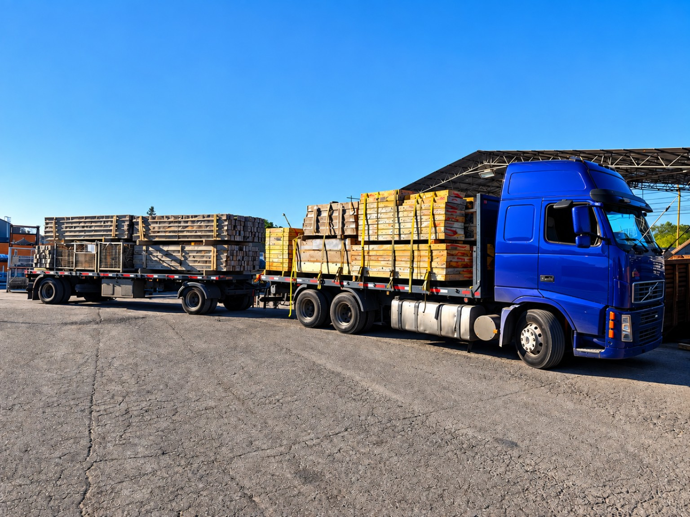
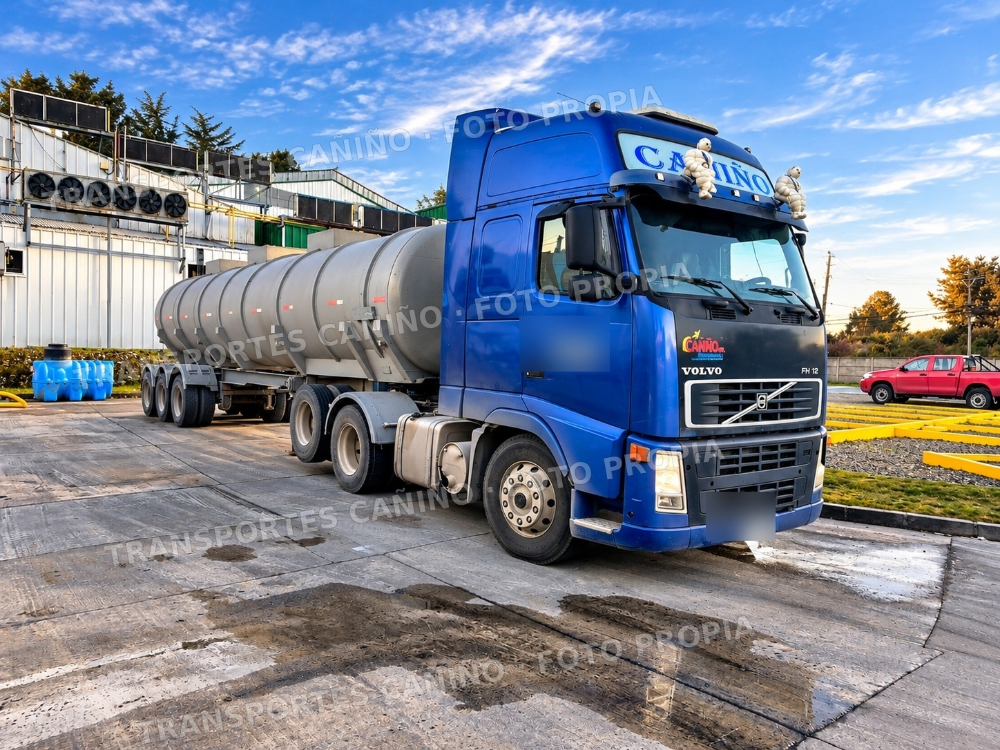
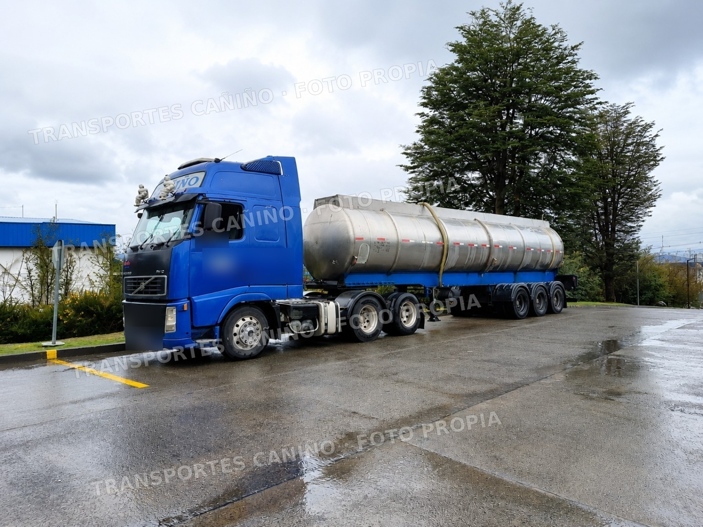
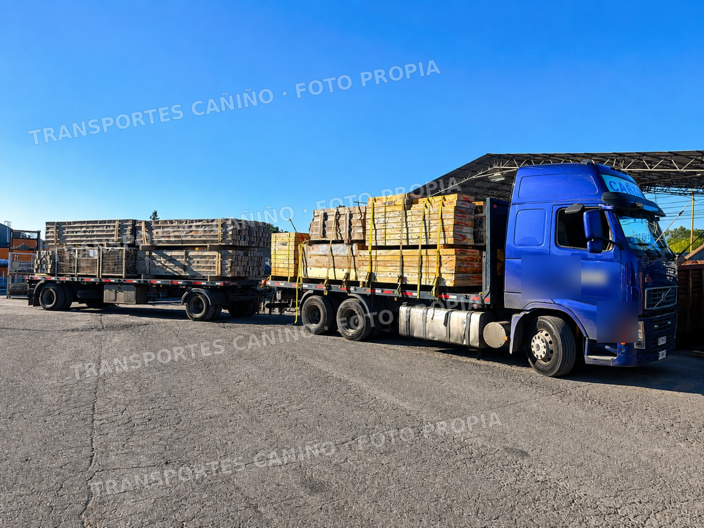
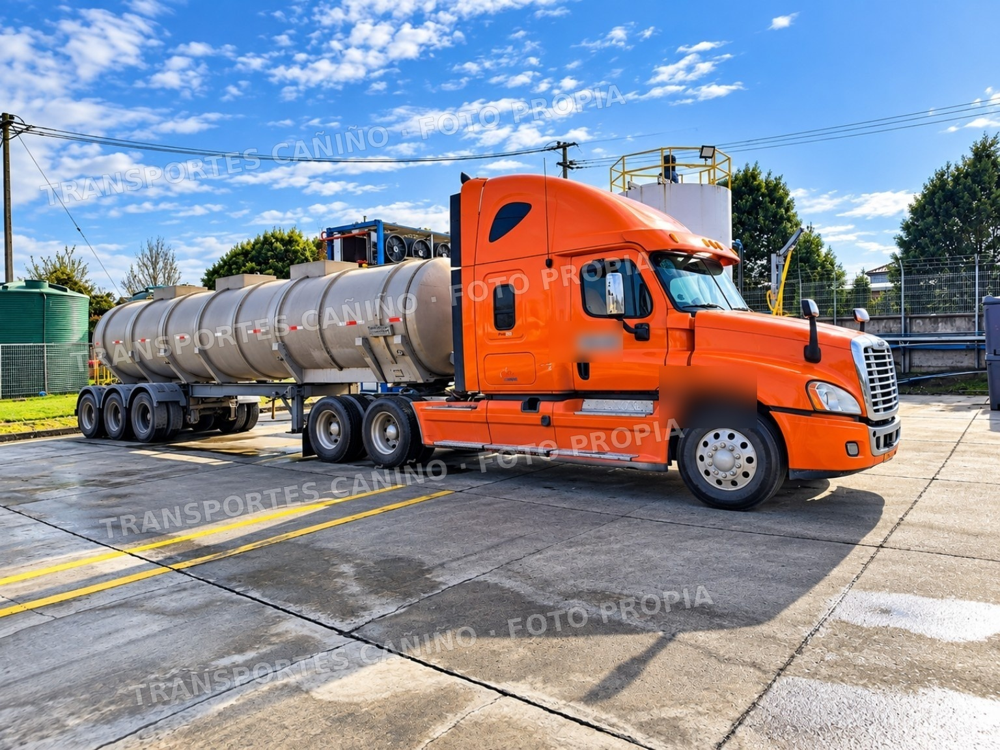
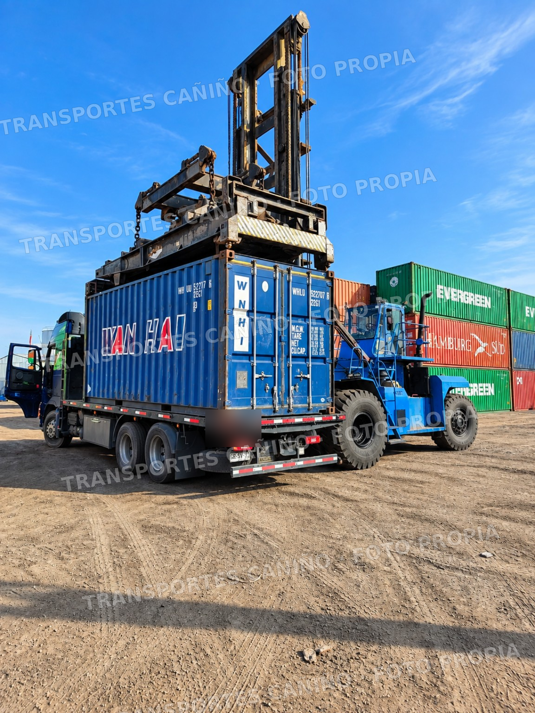
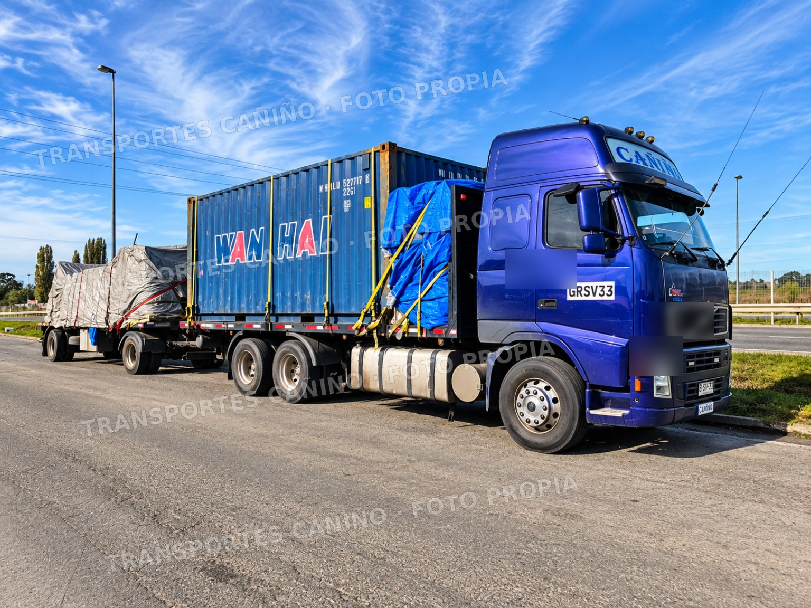
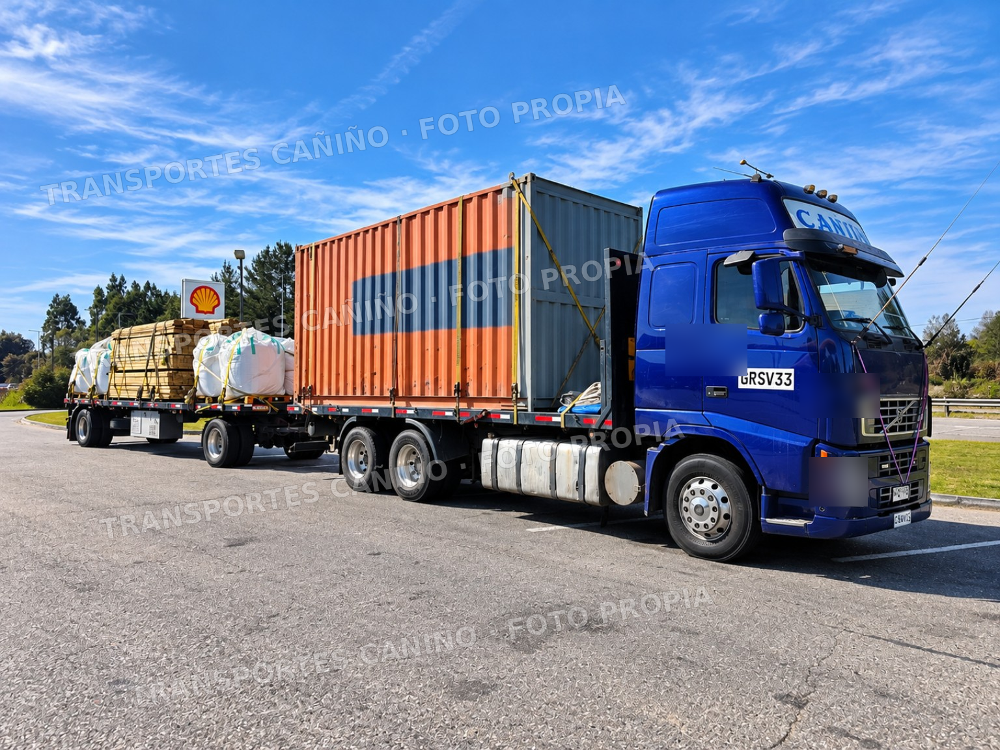

Carga general
Traslado de carga por carretera, con coordinación de origen, destino y operación.

TRANSPORTES CAÑIÑO · PUERTO MONTT
Transporte de carga por carretera desde Puerto Montt y hacia el sur de Chile, Chiloé y otras rutas según la operación.
TRANSPORTES CAÑIÑO
Con base en Puerto Montt, Transportes Cañiño conecta empresas y centros productivos mediante soluciones de transporte por carretera, con cobertura desde la isla de Chiloé hasta Santiago.
Realizamos servicios de transporte de carga general y operaciones con estanques de acero inoxidable. Contamos con equipos planos, ofreciendo soluciones adaptadas a los requerimientos de cada cliente.
SERVICIOS
Servicios de carretera pensados para carga general, estanques, industria salmonera y seguimiento de cada operación.
Traslado de carga por carretera, con coordinación de origen, destino y operación.
Servicios de transporte con estanques de acero inoxidable, coordinados de acuerdo con los requerimientos de cada operación.
Soluciones de transporte para operaciones y requerimientos logísticos de la industria salmonera.
Seguimiento de la operación para mantener control y visibilidad durante el traslado.
RESPALDO
Una operación de transporte necesita coordinación, seguimiento y respaldo en cada etapa del traslado.
Equipos y trabajo en terreno, con imágenes propias de Transportes Cañiño.
Visibilidad de la operación durante el traslado para mantener el control de la ruta.
Coordinamos el servicio considerando los requerimientos y condiciones de cada carga.
Puerto Montt, Santiago, sur de Chile y Chiloé, según las necesidades de cada operación.
TRANSPORTE PARA LA
Agua dulce y agua salada para plantas de proceso de salmón.
El estanque lleva una identificación visible para reconocer su contenido y condición de uso. La información puede incluir la fecha de su última mantención y desinfección, facilitando la trazabilidad y el control de la operación.


RUTAS
Coordinamos origen, destino, tipo de carga y requerimientos específicos antes de programar el servicio.
Solicitar cotización →TRABAJO REAL





CONTACTO
Indícanos origen, destino, tipo de carga y fecha estimada. Te contactaremos para revisar la operación.